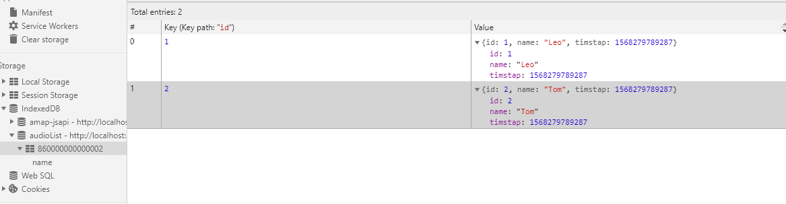
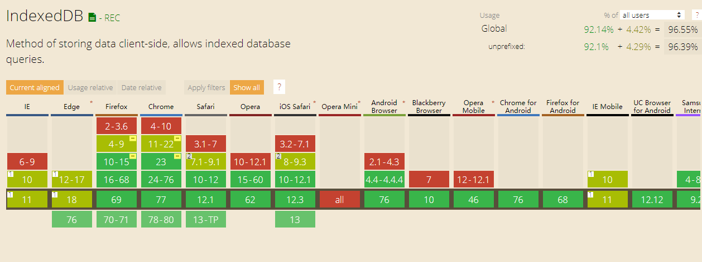

浏览器数据库 IndexedDB
概述
现有的浏览器存储方案有，cookie, localStorage, sessionStorage,他们都可以进行存储，但仅限于key-value形式，而且只能存储字符串，且Cookie 的大小不超过4KB，且每次请求都会发送回服务器；LocalStorage 在 2.5MB 到 10MB 之间（各家浏览器不同），而且不提供搜索功能，不能建立自定义的索引。所以，需要一种新的解决方案，于是 IndexedDB 就诞生了。
IndexedDB 简介
顾名思义，DB就是database,是浏览器提供的本地数据库，而说到数据库，有两种不同类型的数据库，就是关系型数据库和非关系型数据库，关系型数据库如Mysql、Oracle等将数据存储在表中，而非关系型数据库如Redis、MongoDB等将数据集作为个体对象存储。indexedDB就是一个非关系型数据库，它不需要你去写一些特定的sql语句来对数据库进行操作，因为它是nosql的，数据形式使用的是json。
IndexedDB就不仅仅限于字符串的存储了，它可以存储更复杂的类型，如 Uint8Array, Int8Array, ArrayBuffer, Blob等二进制数据，而且存空间大, 一般来说不少于 250MB，甚至没有上限。IndexedDB同样受到同源限制，每一个数据库对应创建它的域名。网页只能访问自身域名下的数据库，而不能访问跨域的数据库。
基本使用
不同于localStorage，IndexedDB的所有操作都是异步的。
基本概念
数据库
数据库是一系列相关数据的容器。每个域名（严格的说，是协议 + 域名 + 端口）都可以新建任意多个数据库。
IndexedDB 数据库有版本的概念。同一个时刻，只能有一个版本的数据库存在。如果要修改数据库结构（新增或删除表、索引或者主键），只能通过升级数据库版本完成。
对象仓库
每个数据库包含若干个对象仓库（object store）。它类似于关系型数据库的表格。
数据记录
对象仓库保存的是数据记录。每条记录类似于关系型数据库的行，但是只有主键和数据体两部分。主键用来建立默认的索引，必须是不同的，否则会报错。主键可以是数据记录里面的一个属性，也可以指定为一个递增的整数编号，一般情况下以id作为主键
{ id: 1, text: 'foo' }
上面的对象中，id属性可以当作主键。数据体可以是任意数据类型，不限于对象。
索引
为了加速数据的检索，可以在对象仓库里面，为不同的属性建立索引。
事务
数据记录的读写和删改，都要通过事务完成。事务对象提供error、abort和complete三个事件，用来监听操作结果
打开(新建)数据库
open方法打开数据库，返回一个 IDBRequest 对象，通过监听error 与 success事件来执行不同的操作，后续基本所有相关操作都是通过监听这两个方法来执行的。
新建数据库与打开数据库是同一个操作。如果指定的数据库不存在，就会新建。不同之处在于，后续的操作主要在upgradeneeded事件的监听函数里面完成，因为这时版本从无到有（或版本号更新时），会触发这个事件。
而一般新建数据库之后的第一件事是新建对象仓库（即新建表），因为后续的所有操作都是围绕这对象仓库来进行的，所以代码封装如下：
const indexedDB = window.indexedDB || window.webkitIndexedDB || window.mozIndexedDB || window.msIndexedDB;//兼容写法
const openDB(myDB)=> {
//建立或打开数据库，建立对象存储空间(ObjectStore)
var request = indexedDB.open(myDB.name, myDB.version || 1);
request.onerror = (e)=> {
console.log("数据库打开失败");
}
request.onsuccess=()=> {
myDB.db=request.result;
console.log('数据库打开成功');
};
request.onupgradeneeded = (event)=> {
myDB.db=event.target.result;
console.log('数据库更新成功');
var objectStore;
//判断表是否存在，不存在则新建
if (!myDB.db.objectStoreNames.contains(myDB.table.name)) {
objectStore = myDB.db.createObjectStore(myDB.table.name, { keyPath:myDB.table.keyPath });
//指定id为主键，默认从主键进行搜索
//此处也可以创建其他索引，详见3.5
}
};
},
数据的增删改查
仓库对象创建后，我们就可以执行增删改查操作了，代码封装如下（promise写法）：
const indexedDB = window.indexedDB || window.webkitIndexedDB || window.mozIndexedDB || window.msIndexedDB;
export default {
indexedDB:indexedDB?indexedDB:null,
openDB(myDB) {
//建立或打开数据库，建立对象存储空间(ObjectStore)
return new Promise((resolve,reject)=>{
var request = this.indexedDB.open(myDB.name, myDB.version || 1);
request.onerror = (e)=> {
console.log("数据库打开失败");
reject(e)
}
request.onsuccess=()=> {
myDB.db=request.result;
resolve(request.result);
console.log('数据库打开成功');
};
request.onupgradeneeded = (event)=> {
myDB.db=event.target.result;
console.log('数据库更新成功');
resolve(myDB.db);
var objectStore;
if (!myDB.db.objectStoreNames.contains(myDB.table.name)) {
objectStore = myDB.db.createObjectStore(myDB.table.name, { keyPath:myDB.table.keyPath });
}
};
})
},
//添加数据
addData(myDB, data) {
return new Promise((resolve,reject)=>{
const request = myDB.db.transaction([myDB.table.name], 'readwrite').objectStore(myDB.table.name).add(data);
request.onsuccess = (event)=> {
console.log('数据写入成功');
resolve(event)
};
request.onerror = (event) =>{
console.log('数据写入失败');
reject(event)
}
})
},
//更新数据
putData(myDB, data) {
return new Promise((resolve,reject)=>{
const request = myDB.db.transaction([myDB.table.name], 'readwrite').objectStore(myDB.table.name).put(data);
request.onsuccess = (event)=> {
console.log('数据更新成功');
resolve(event)
};
request.onerror = (event) =>{
console.log('数据更新失败');
reject(event)
}
})
},
//读取数据
getData(myDB, keyPath) {
return new Promise((resolve,reject)=>{
const transaction = myDB.db.transaction([myDB.table.name]);
const objectStore = transaction.objectStore(myDB.table.name);
const request = objectStore.get(keyPath || myDB.table.keyPath);
request.onerror = (event)=> {
console.log('数据读取失败');
reject(event)
};
request.onsuccess = (event)=> {
console.log("数据读取成功")
resolve(request.result)
};
})
},
//删除数据
deleteData(myDB, keyPath) {
return new Promise((resolve,reject)=>{
const request=myDB.db.transaction(myDB.table.name, 'readwrite').objectStore(myDB.table.name).delete(keyPath || myDB.table.keyPath);
request.onerror = (event)=> {
console.log('删除数据失败');
reject(event)
};
request.onsuccess = (event)=> {
console.log("删除数据成功")
resolve(event)
};
})
},
clearData(myDB) {
//删除指定仓库全部记录
const request=myDB.db.transaction(myDB.table.name, 'readwrite').objectStore(myDB.table.name).clear();
request.onerror = (event)=> {
console.log(`删除${myDB.table.name}仓库失败`);
reject(event)
};
request.onsuccess = (event)=> {
console.log(`删除${myDB.table.name}仓库成功`)
resolve(event)
};
}
}

使用索引
索引的意义在于，可以让你搜索任意字段，也就是说从任意字段拿到数据记录。如果不建立索引，默认只能搜索主键（即从主键取值）。
假定新建表格的时候，对name字段建立了索引(必须在创建的时候就添加，否则无效)。
objectStore.createIndex('name', 'name', { unique: false });
此时，在表打开之后，我们可以通过搜索name来检索数据
this.$db.openDB(this.myDB).then((res)=>{
const transaction = this.myDB.db.transaction([this.myDB.table.name]);
const objectStore = transaction.objectStore(this.myDB.table.name);
const index=objectStore.index('name');
const request = index.get("Leo");
request.onsuccess = (event)=> {
console.log('数据读取成功');
console.log(event.target.result)
};
request.onerror = (event) =>{
console.log('数据读取失败');
}
})
结果为：
{
id: 1
name: "Leo"
timstap: 1568279789287
}
遍历仓库
indexedDB2规范中,在对象存储空间对象上纳入了一个getAll()，但早期规范中需要使用openCursor指针来获取目标仓库下所有的数据列表（数组）
//遍历指定仓库所有对象
getAllData(myDB) {
return new Promise((resolve,reject)=>{
const objectStore = myDB.db.transaction(myDB.table.name, 'readwrite').objectStore(myDB.table.name);
// indexedDB2规范中,在对象存储空间对象上纳入了一个getAll()
if(objectStore.getAll){
objectStore.getAll().onsuccess = (event)=> {
console.log("获取所有数据成功1")
resolve(event.target.result)
}
}else{
objectStore.openCursor().onsuccess = (event)=> {
console.log("获取所有数据成功2")
resolve(event.target.result)
}
}
})
},
结语
indexedDB数据库的相关api并不复杂，本文只是简单介绍了一些常规用法，更深层次的使用需要继续深入研究，最后附上indexedDB在各个浏览器上的实现程度：
